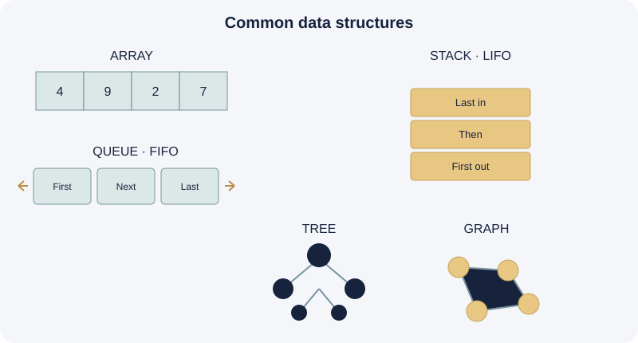

A data structure organizes and stores data so operations such as searching, insertion, deletion, and updating can be performed effectively.

Common ways to organize information
Array
An indexed sequence of elements, useful when accessing items by position.
Linked list
Connected nodes, each holding data and a link to another node.
Stack
Last In, First Out (LIFO). Like a stack of plates.
Queue
First In, First Out (FIFO). Like a waiting line.
Tree
A hierarchy of nodes, such as a folder structure.
Graph
Vertices connected by edges, such as a road network.
Why does the choice matter?
Different structures support different operations efficiently. A queue suits tasks processed in arrival order, while a tree can represent hierarchical relationships. The best choice depends on how the data will be used.
Key takeaway: Organizing data well is essential to efficient and understandable software.